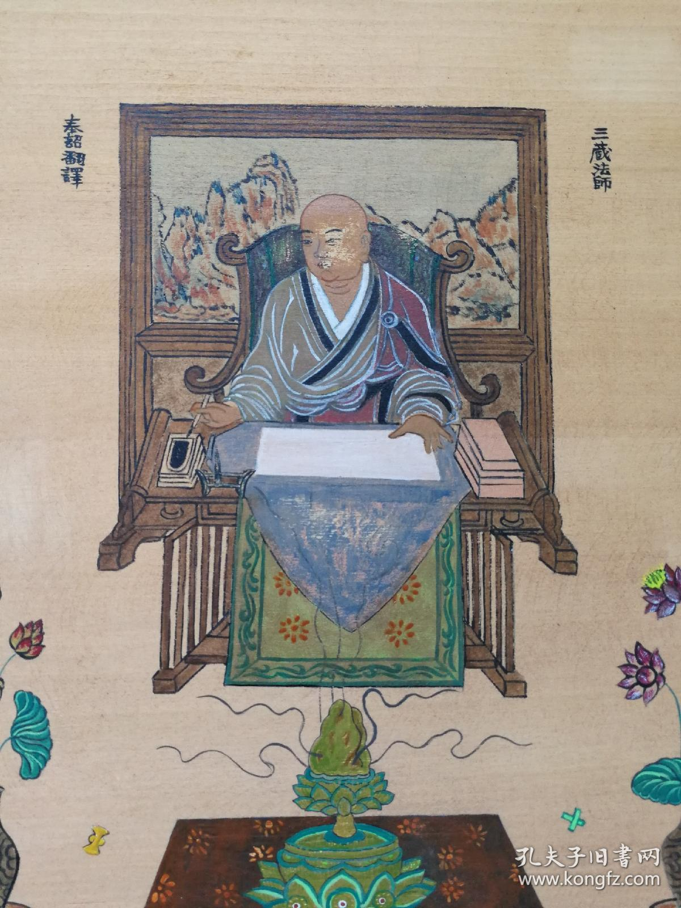
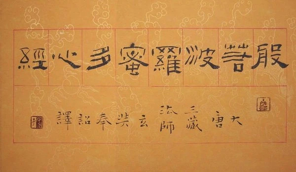

前六年（公元645-650），以译《瑜伽师地论》为中心，同时译了与此论有关的著作， 中间的十年（公元651-660），以翻译《俱舍论》为中心遍及与它有关的著作 最后四年（公元660-664），以《大般若经》的翻译为中心

玄奘在佛经翻译上取得了如此大的成就,一定对翻译理论进行过深入的研究。但是,他的有关译论却留存极少。玄奘在646年完成《大唐西域记》,在其所撰序言中提到:“然则佛兴西方,法流东国,通译音讹,方言语谬,音讹则义失,语谬则理乖。故曰:“必也正名乎”,贵无乖谬矣。”
译文形式：
“玄奘的翻译较之罗什的只存大义可说是直译，但比较义净那样诘屈聱牙倒又近乎直译。”（吕瀓《慈恩宗》）
在文体上，“运用了六代以来那种偶正奇变的文体，参酌梵文勾锁连环的方式，创成一种精严凝重的风格，用来表达特别注重结构的瑜伽学说”。

1，秘密故不翻。如咒语等，六字真言“唵嘛呢叭咪吽”意为“哦!莲花里的珠宝”。因为这些是有一种秘密的含义。
2，多义故不翻。如梵语bhagavat 薄伽梵 一词具有六种意义:“自在、炽盛、端严、名称、吉祥、尊贵”。这些词具有多种含义，不能找到等同的中文词。
3，此无故不翻。如阎浮树，只产印度，中国根本没有。
4，顺古故不翻。如梵语anuttarasamyaksambodhi 以前就翻译为阿耨多罗三藐三菩提，古人已经一直这么说，就不再改变语言习惯。
5，生善故不翻。如般若，并不直接翻译为智慧，因为般若的意义高于智慧，更能使人生尊敬之意。
简单来说，玄奘提出的“五不翻”原则实际上就是“音译”的原则。由于文化差异的原因，翻译时，人们经常会在目的语中无法找到现成的对应词，这时往往采用音译的方法。